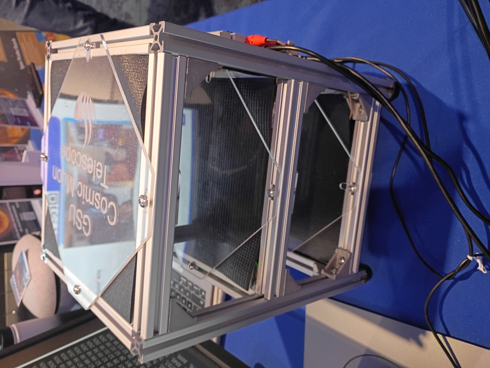

Particle crosses a plastic scintillator
A tiny flash of light
Silicon photomultiplier makes an electrical pulse
When a charged particle crosses a scintillator tile, it can produce light. A silicon photomultiplier (SiPM) turns that light into an electrical pulse. Pulses in two tiles at nearly the same time form a coincidence.
When connected, the numbers and history are read from the detector's latest minute log, without changing its settings. The status shows whether that data is fresh. No simulated counts replace missing detector records. When run without a detector source, the display is explicitly labelled Simulation.
The room field is a geometric illustration, not recorded particle positions. Tracks that miss every tile do not create detector counts or LED flashes. A track through one tile lights that tile's indicator but makes no coincidence. LED flashes follow the illustrated intersections, not measured hardware timestamps.
The three aligned 20 × 20 cm tiles have 13 cm centre spacing. Directions follow an assumed cos² angular intensity. Unrelated room tracks are thinned for display. Detection efficiency, noise, scattering and photon transport are not calculated. Raw singles include noise and are not interpreted as a physical muon flux.
The yellow square pyramid shows allowed directions from the centre of the lower selected tile to the full upper tile. It is not the acceptance for every possible starting position. For All pairs, the reference is the bottom-tile centre and the upper plane is the top tile.
A track through all three tiles contributes to all three pair counts. Do not add these counts to obtain a unique particle total. The CAD readout is exported from the local KiCad PCB. The Raspberry Pi 5 model is from Raspberry Pi's manufacturer STEP file. Cover opening and slowed LED flashes are display animations, not a firmware timing model.

GSU cosmic muon detector · Exhibition detector